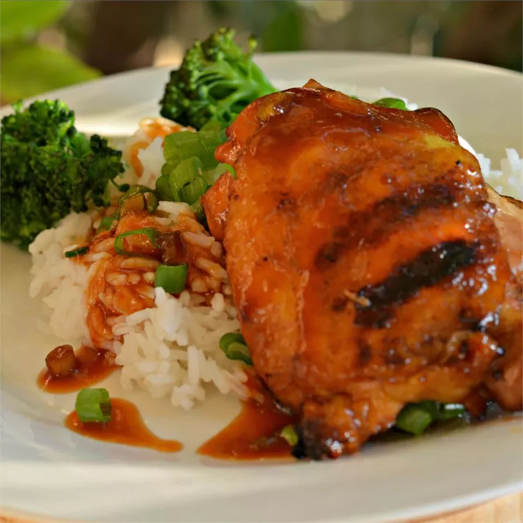

Huli Huli Chicken

Description
Huli Huli Chicken (turn, turn) has been a Hawaiian staple with sticky rice for quite some time.
Ingredients
- 2 3-pound chickens, each cut into 8 pieces
- 1 cup unsweetened pineapple juice
- 1/2 cup soy sauce
- 1/2 cup brown sugar
- 1/3 cup ketchup
- 1/4 cup sherry
- 1 2-inch piece of fresh ginger, crushed
- 3 cloves garlic, crushed
- 4 green onions, chopped
- 1/4 teaspoon dry mustard
Steps
- Rinse chicken pieces and pat dry with paper towels.
- Combine pineapple juice, soy sauce, brown sugar, ketchup, sherry, ginger, garlic, green onions,
and dry mustard in a large resealable plastic bag, stirring the marinade until brown sugar has dissolved.
- Place chicken pieces into the bag, squeeze out air, seal bag, and lomi (massage) bag to coat chicken with
marinade; refrigerate at least 4 hours to overnight.
- Move an oven rack 6 inches from heat source and preheat oven to 425 degrees F or 220 degrees C.
- Remove chicken from marinade and arrange chicken, skin sides up, on a broiler pan.
- Bake chicken in preheated oven until browned on both sides and the juices run clear, turning every ten
minutes, 30 to 45 minutes.
- Baste with remaining marinade after each turning. An instant-read meat thermometer inserted into the thickest
piece of chicken, not touching bone, should read at least 160 degrees F or 70 degrees C.
Return to main page